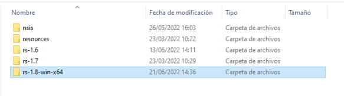
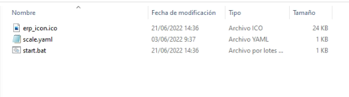

Configuración Cliente de Lectura de Peso en Windows
Configurar la aplicación
Se Debe conocer en puerto COM se encuentra conectado la balanza, ademas de la estructura de la trama de datos que envia la balanza.
Acceder al directorio de el Acceso Directo en el escritorio (Record-Weight-Sender-DotNet) resultante luego de instalar la apliciación, o en su defecto la siguiente ruta:
C:\Users\(Usuario de Windows)\AppData\Local\Record-Weight-Sender-DotNet\


Si accedes usando el Acceso directo debes regresar una carpeta atras, la ruta previamente menciónada debe Existir la siguiente distribuición de directorios.

Configurar el paramteros de la aplicación en archivo scale.yaml
Para realizar este paso se debe acceder la carpeta resources.

Abrimos el siguiente archivo printer.yaml el cual tiene la siguiente estructura.
Al modificar el archivo se deben respetar las identaciónes y espacios en blanco, ya que de no ser asi la aplicación no iniciara.
- server:
host: 167.172.15.104 port: 32686 queue_name: “Romana-1-test” timeout: 6000
client_name: “Romana-1-test” scale:
name: “Romana-1-test” folder: “/tmp” port_name: “COM10” speed: 2400 data_bits: 8 stop_bits: “One” parity: “None” flow_control: “None” start_character: 61 end_character: 13 start_word: “” end_word: “” string_length: 12 start_cut_position: 2 end_cut_position: 7 start_cut_screen_position: 2 end_cut_screen_position: 7 waiting_time: 5000
A continuación se Describe cada campo:
Sección server:
host: Dominio o Dirección IP donde se encuentra ejecutandose el servicio de cola de Kafka.
port: Puerto por el cual responde el servicio de cola de Kafka, en este parametro no se deben colocar puntos ni comas.
queue_name: Nombre del servicio de cola.
timeout: Tiempo de espera de respuesta, esta expresado en ms
client_name: Nombre de balanza dentro del servicio de cola (Se Recomienda colocar el mismo valor que queue_name)
Sección scale:
name: Nombre con el que se identifica la balanza (Se Recomienda colocar el mismo valor que queue_name)
folder: Ruta de creación archivos temporales (No modificar este parametro)
port_name: Puerto COM donde esta conectada la balanza (Solo se usa con impresoras fiscales)
speed: Velocidad en Baudios del puerto serial
data_bits: Cantidad de bits de datos que contiene la trama de datos enviada por la balanza
- stop_bits: Bits de parada que usa la balanza puede tomar uno de los siguientes valores:
- None
One
Two
OnePointFive
- parity: Tipo de paridad usada por la comunicación serial, puede tomar lo siguientes valores:
- None
Odd
Even
Mark
Space
- flow_control: Flujo de Control de datos usado por la comunicación serial, toma los siguientes valores:
None
XOnXOff
RequestToSend
RequestToSendXOnXOff
start_character: Caracter inicial de la trama.
end_character: Caracter final de la trama.
start_word: Palabra de inicio de trama o combinación de Caracteres con los que inicia la trama (Este parametro debe llenar solo cuando el la trama inicie con mas de un caracter).
end_word: Palabra de finalización de trama o combinación de Caracteres con los que finaliza la trama (Este parametro debe llenar solo cuando el la trama finalice con mas de un caracter).
string_length: Longuitud de Caracteres de la trama.
start_cut_position: Posición de inicio de corte de trama, este valor corresponde al punto de la trama donde se inicia a recibir el primer dijito del pesaje.
end_cut_position: Posición de finalización de corte de trama, este valor corresponde al punto de la trama donde se finaliza de recibir el ultimo dijito del pesaje.
start_cut_screen_position: Posición de inicio de corte de trama en el visor de la balanza, este valor corresponde al punto de la trama donde se inicia a recibir el primer dijito del pesaje.
end_cut_screen_position: Posición de finalización de corte de trama en el visor de la balanza, este valor corresponde al punto de la trama donde se finaliza de recibir el ultimo dijito del pesaje.
waiting_time: Tiempo de espera para recibir datos.
Iniciar la aplicación para verificar la correcta configuración
Si la apliciación esta correctamente configurada al iniciarla debe mostrar la siguiente consola de terminal.
Si por el contrario sucede uno de las siguiente casos:
La consola se cierra inmediatamente al iniciar la aplicación, esto se debe que los parametros no estan configurados correctamento on no se respeto la estructura del archivo printer.yaml
Esto sucede debido a que hay un error en los datos de conexión verificar los parametros host y port.
Verificar que existe un Servicio de Windows con el Nombre de Record Weight EPRCYA


Para verificar que el servicio funcione, abrir las Propiedades del servicio y presionar el boton iniciar el estado del servicio debe mantenerse En Ejecución
Prueba de reinicio.
Se debe reiniciar el equipo, al iniciar nuevamente automaticamente debe iniciar automaticamente el Servicio Record Weight EPRCYA
De ser asi la aplicación esta Configurada y lista para su uso, en este punto se puede proceder a hacer la prueba de Lectura de Peso desde ADempiere.